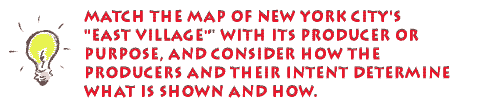
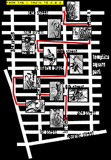
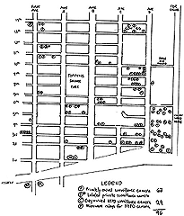
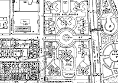
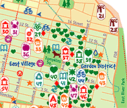

Which is the building insurance map?
Which was made by a civil liberties group opposed to "Big Brother"?
Which was made by student map makers charting their communities?
Which map shows a bicycle tour route?
When you are done, click here for further explanation.